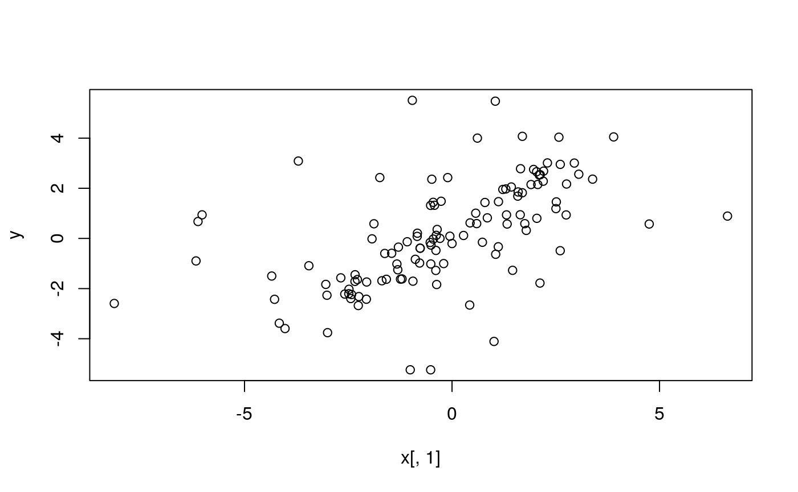
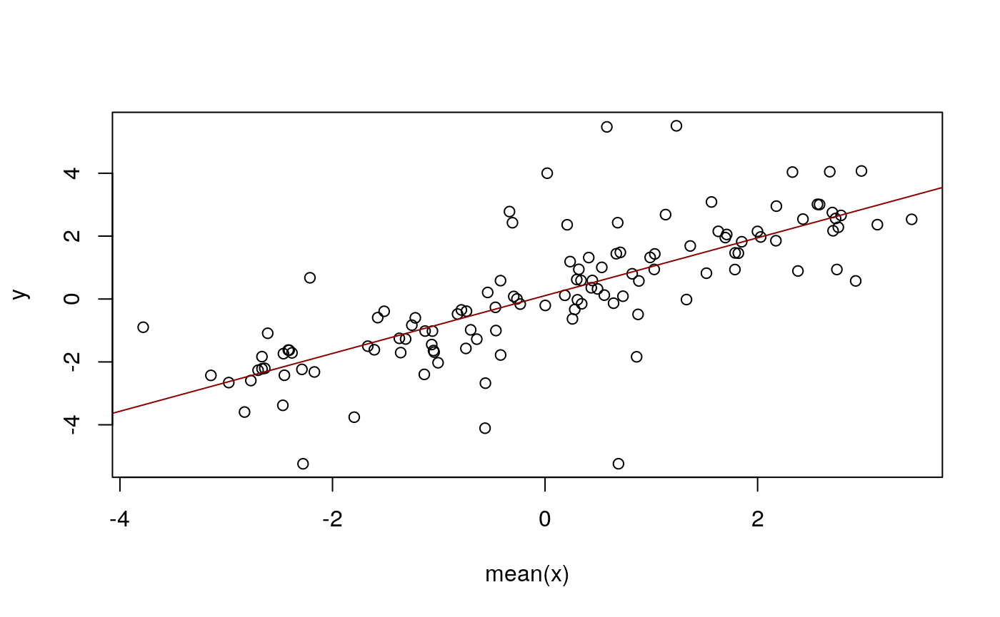
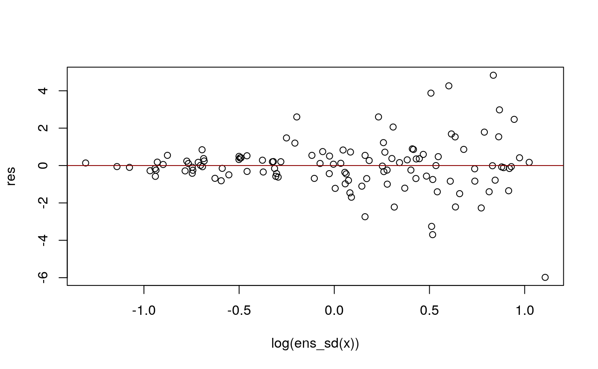

crch_model.Rmdn <- 200
k <- 30
x_mean <- runif(n, -3, 3)
x_sd <- exp(runif(n, -1, 1))
d <- data.frame(
y = rnorm(n, mean = x_mean, sd = x_sd)
)
d$x <- as_ensemble(
replicate(k, rnorm(n, mean = x_mean, sd = x_sd))
)
rm(x_mean, x_sd)
# --- split training and prediction data ---
nd <- d[121:200, ]
d <- d[1:120, ]
## # --- CAUTION: subset method is missing, next two lines are an hard coded fix:
## nd$x <- as_ensemble(nd$x)
## d$x <- as_ensemble(d$x)
dim(d)## [1] 120 2str(d)## 'data.frame': 120 obs. of 2 variables:
## $ y: num 0.0889 -0.0169 -0.3886 -5.2388 -2.0273 ...
## $ x: 'ensemble' num [1:120, 1:30] -0.0511 -1.9276 -0.7704 -1.0066 -2.4825 ...plot(y ~ x[, 1], data = d)
##
## Call:
## lm(formula = y ~ mean(x), data = d)
##
## Residuals:
## Min 1Q Median 3Q Max
## -5.9826 -0.5767 -0.0199 0.4787 4.8307
##
## Coefficients:
## Estimate Std. Error t value Pr(>|t|)
## (Intercept) 0.10849 0.12620 0.86 0.392
## mean(x) 0.91933 0.07306 12.58 <2e-16 ***
## ---
## Signif. codes: 0 '***' 0.001 '**' 0.01 '*' 0.05 '.' 0.1 ' ' 1
##
## Residual standard error: 1.382 on 118 degrees of freedom
## Multiple R-squared: 0.573, Adjusted R-squared: 0.5694
## F-statistic: 158.3 on 1 and 118 DF, p-value: < 2.2e-16abline(fm, col = "darkred")

##
## Call:
## crch(formula = y ~ mean(x) | log(ens_sd(x)), data = d)
##
## Standardized residuals:
## Min 1Q Median 3Q Max
## -2.4609 -0.6364 -0.0127 0.6031 3.5370
##
## Coefficients (location model):
## Estimate Std. Error z value Pr(>|z|)
## (Intercept) 0.10421 0.05696 1.829 0.0673 .
## mean(x) 0.92991 0.03638 25.561 <2e-16 ***
##
## Coefficients (scale model with log link):
## Estimate Std. Error z value Pr(>|z|)
## (Intercept) -0.07753 0.06479 -1.197 0.231
## log(ens_sd(x)) 1.15394 0.11935 9.669 <2e-16 ***
## ---
## Signif. codes: 0 '***' 0.001 '**' 0.01 '*' 0.05 '.' 0.1 ' ' 1
##
## Distribution: gaussian
## Log-likelihood: -167.4 on 4 Df
## Number of iterations in BFGS optimization: 16## 'data.frame': 80 obs. of 3 variables:
## $ y : num -0.273 0.89 2.161 -0.112 1.189 ...
## $ x : 'ensemble' num [1:80, 1:30] 0.16 1.486 1.821 0.831 -1.873 ...
## $ fit: 'ensemble' num [1:80, 1:30] 0.196 1.495 2.045 0.905 -1.216 ...